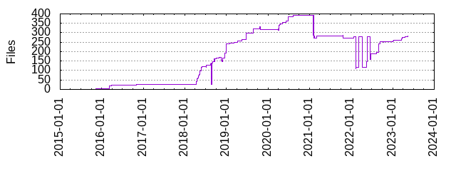

Files
- Total files
- 284
- Total lines
- 17997
- Average file size
- 3550.92 bytes

| Extension | Files (%) | Lines (%) | Lines/file |
|---|
| 26 (9.15%) | 529 (2.94%) | 20 |
| BUILD | 2 (0.70%) | 21 (0.12%) | 10 |
| Dockerfile | 1 (0.35%) | 66 (0.37%) | 66 |
| WORKSPACE | 1 (0.35%) | 1 (0.01%) | 1 |
| bat | 1 (0.35%) | 38 (0.21%) | 38 |
| bazel | 62 (21.83%) | 2086 (11.59%) | 33 |
| bzl | 45 (15.85%) | 7056 (39.21%) | 156 |
| cake | 1 (0.35%) | 83 (0.46%) | 83 |
| config | 1 (0.35%) | 6 (0.03%) | 6 |
| cs | 58 (20.42%) | 3715 (20.64%) | 64 |
| csproj | 14 (4.93%) | 236 (1.31%) | 16 |
| fs | 22 (7.75%) | 506 (2.81%) | 23 |
| fsproj | 2 (0.70%) | 24 (0.13%) | 12 |
| fsx | 1 (0.35%) | 219 (1.22%) | 219 |
| json | 6 (2.11%) | 111 (0.62%) | 18 |
| lock | 3 (1.06%) | 524 (2.91%) | 174 |
| md | 15 (5.28%) | 672 (3.73%) | 44 |
| ps1 | 1 (0.35%) | 188 (1.04%) | 188 |
| references | 2 (0.70%) | 11 (0.06%) | 5 |
| sh | 9 (3.17%) | 183 (1.02%) | 20 |
| sln | 1 (0.35%) | 37 (0.21%) | 37 |
| targets | 2 (0.70%) | 1114 (6.19%) | 557 |
| tpl | 2 (0.70%) | 99 (0.55%) | 49 |
| txt | 1 (0.35%) | 202 (1.12%) | 202 |
| user | 1 (0.35%) | 57 (0.32%) | 57 |
| yaml | 1 (0.35%) | 30 (0.17%) | 30 |
| yml | 3 (1.06%) | 159 (0.88%) | 53 |